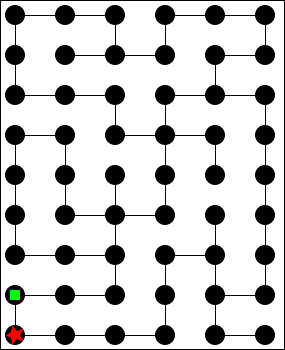

This week we will be helping Heros Inc., develop and test some inventions for escaping the Minotaur in a Labyrinth. The problem is that the Minotaur knows his dungeon well and always takes the shortest path to the adventurer. On the plus side the millennia have caught up to the beast so most adventurers can keep pace with him. In order to test some inventions, we are going to simulate the labyrinth with a graph, and we can simulate certain characteristics of the adventurer by the way she picks her next step. For example, a poor unequipped adventurer might have to resort to picking the next step in a completely random way, whereas the smart adventurer with the Sight-o-Matic (© Heros Inc.) will know the next step to on the shortest path to the exit.
You may use my template for this lab, and my version of last week's lab, if you so desire.
For the Labyrinth, we will represent every intersection as a node and the edges as the possible paths leading away from the node. It is important to make sure that all your nodes are connected, that is every node is reachable from every other node by following the edges, or else there will be parts of your Labyrinth that are unreachable. You will need to provide your desired maze, see the template for the example below.
In this graph node 0 is in the top left hand corner and the nodes are named 0 - 53 from left to right. Feel free to make several other mazes, I suggest writing them on paper then transferring the edgelists to the screen.
In order to sell the products, Heros Inc. would really like some visuals to convince their buyers. Nothing like a bit of gore and blood to show someone how far a little prevention will take them.
Now we have our maze we are ready to make our simulation. In order to get an animation of the world you will be making an "obect-oriented" function (as in your text), and using the world.ss teachpack (see the helpdesk and your template for use of the world.ss). With the required functions react for reacting to tick events and draw for producing an image of the world, and any other state you might think you need. Also the react function will need to test to see if the adventurer has won (or gotten to the exit, which I just set to be the 0 node) or if the Minotaur has won (i.e. the two crossed paths) and if so call the end-of-time function..
The adventurer strategies should take some inputs (you decide) and output the next node that the adventurer advances too, an alternate design would be to put the strategies in the world to get some other state information. Since the Minotaur always goes straight for the player, you don't need to input a strategy for him, just use my function based on Dijkstra's Algorithm. You should make at least four new strategies for the adventurer. The random-neighbor where you pick a random neighbor and advance has been provided. Other possiblities include the Sight-O-Matic where the adventurer goes straight for the exit, Torch where you are able to see if the Minotaur is one of the neighboring nodes, QuickWall which allows an adventurer can seal a passage way for every QuickWall she has, any combination of other strategies, or whatever else you can think up. Be creative, remember you want the most successful strategy.
Here is an example of my output. Also you should note that you have to change your code and re-evaluate to get a different simulation up for each strategy.
While the visualization is nice, the quants in the room want to see some more data. To make a better argument do a Monte Carlo simulation where a function will call the different strategies on the different mazes you created putting the adventurer at random node with a large number of trials (100 or so). The reports the number of eaten adventurers for each product.
If you did not use my graph library, then turn in both the graph library and the assignment to chalk; otherwise, only submit the assignment.